🏫 云大校园环境
东陆古韵与呈贡新貌 · 教学楼、图书馆、运动场馆、云山与宿舍园区
📷 本页照片均来自 Wikimedia Commons 的公有领域或 CC 自由版权作品，使用时按要求标注作者与许可协议。
🎓 校内环境 · 东陆校区
云南大学校本部，翠湖北路 2 号，百年老建筑与银杏大道都在这里。
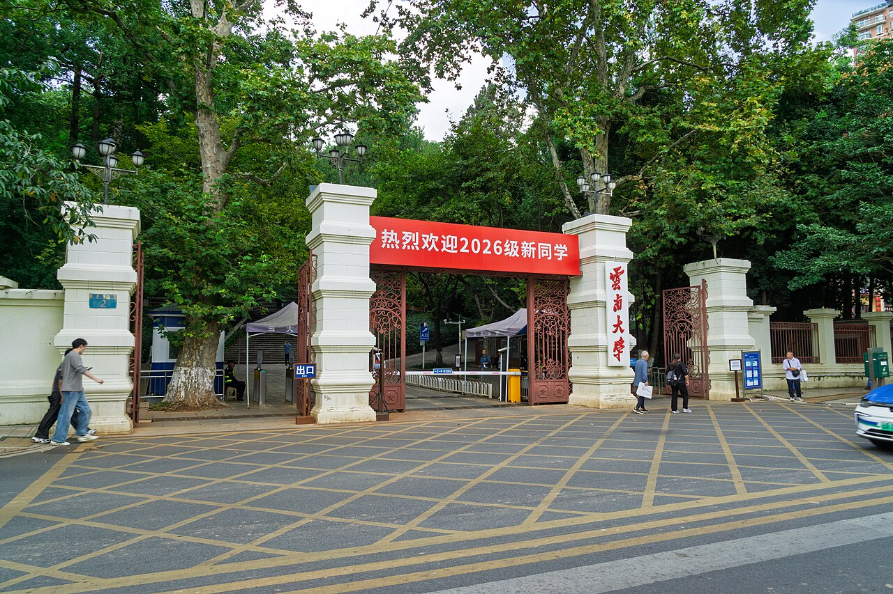
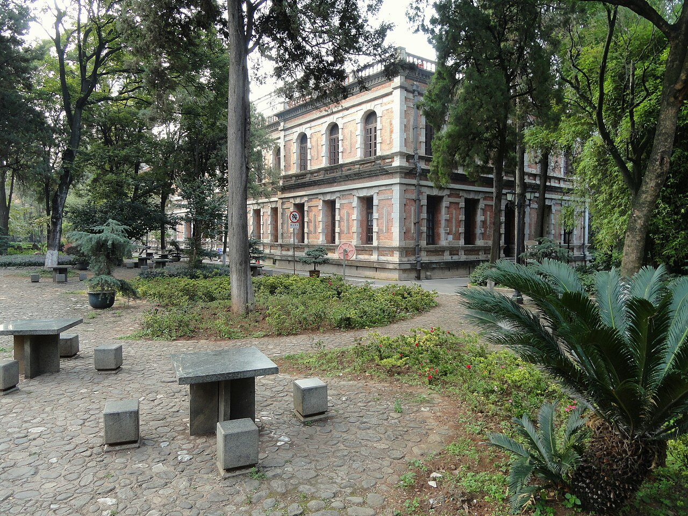
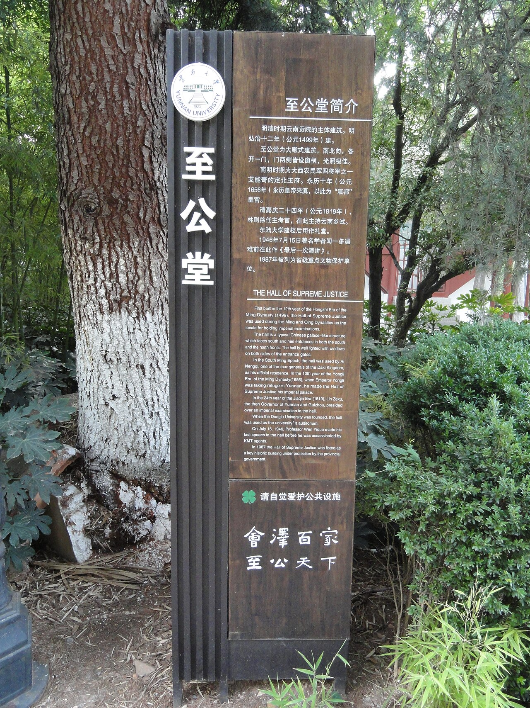
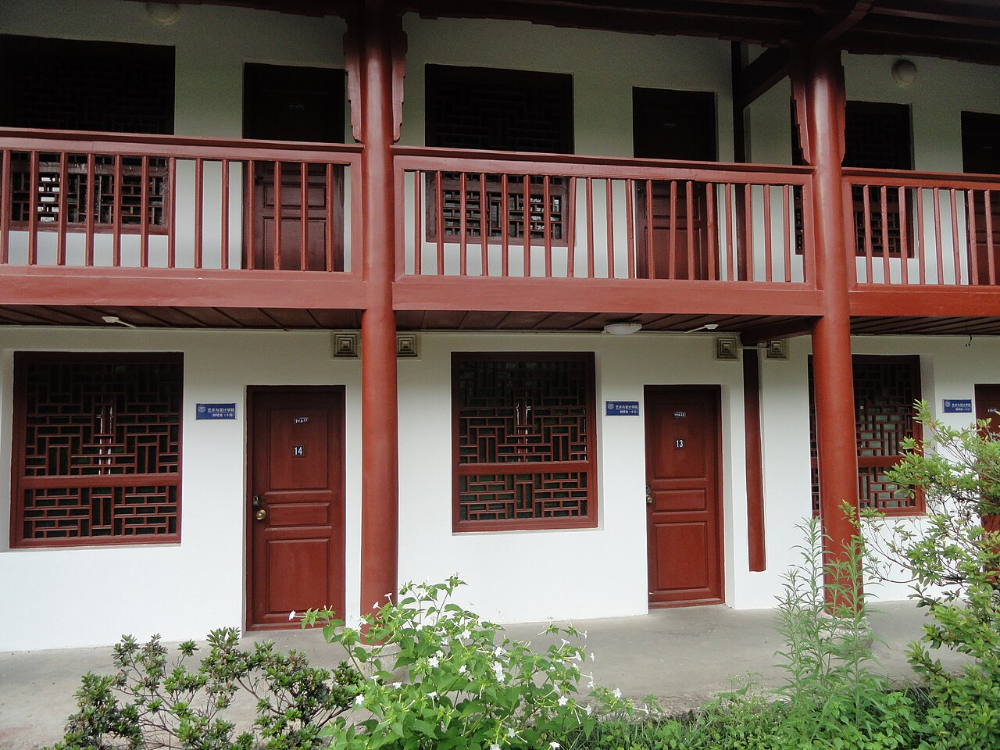
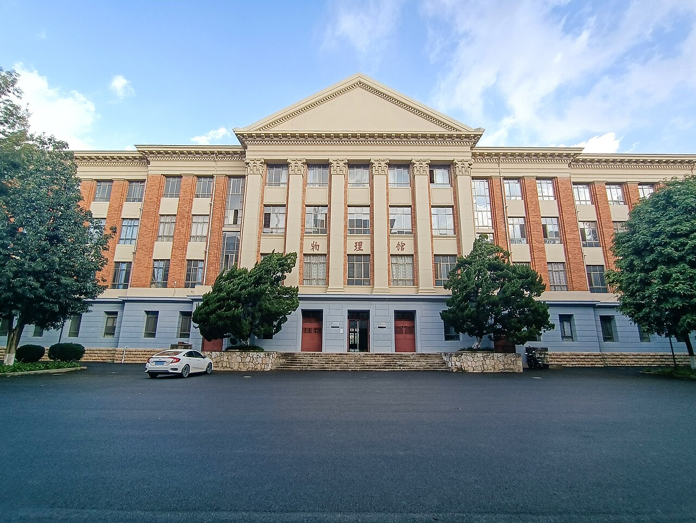
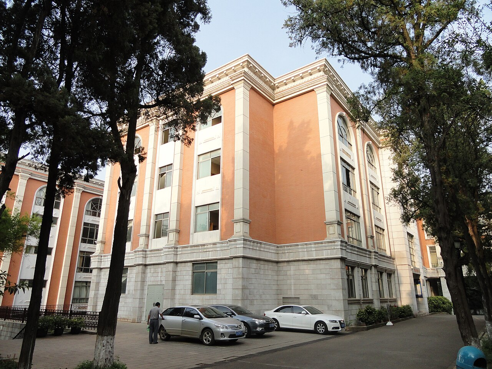
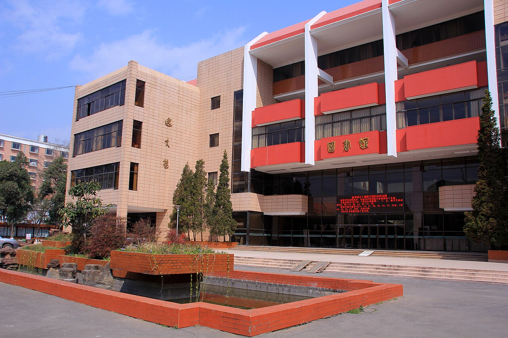
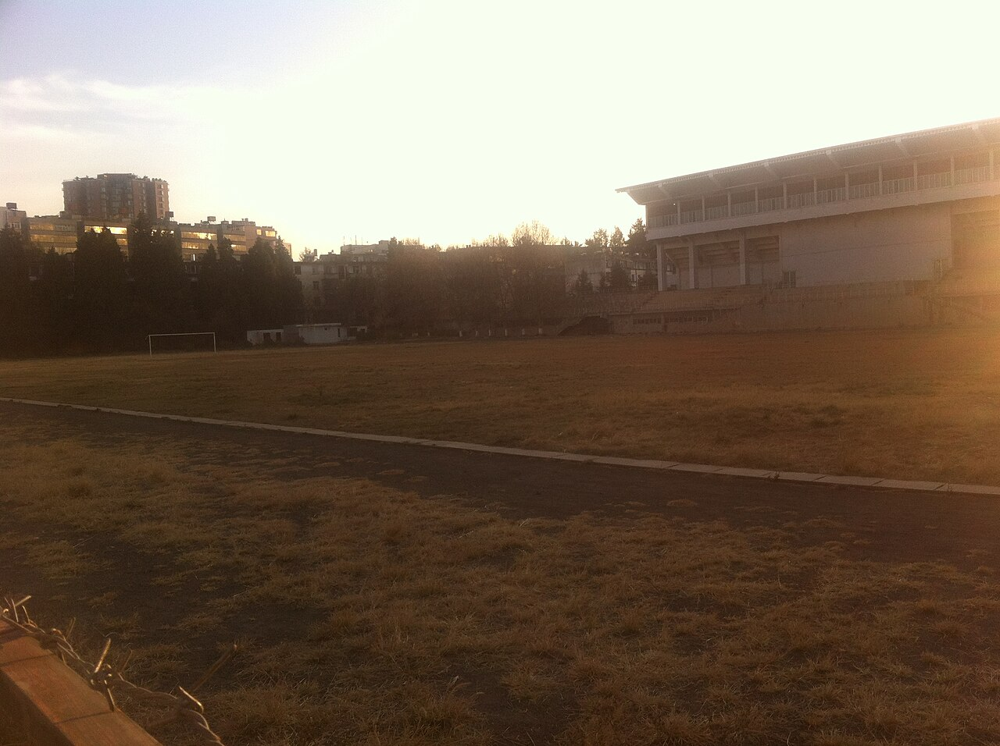
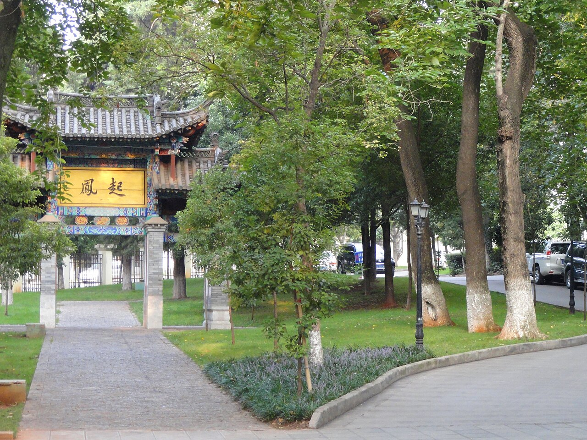
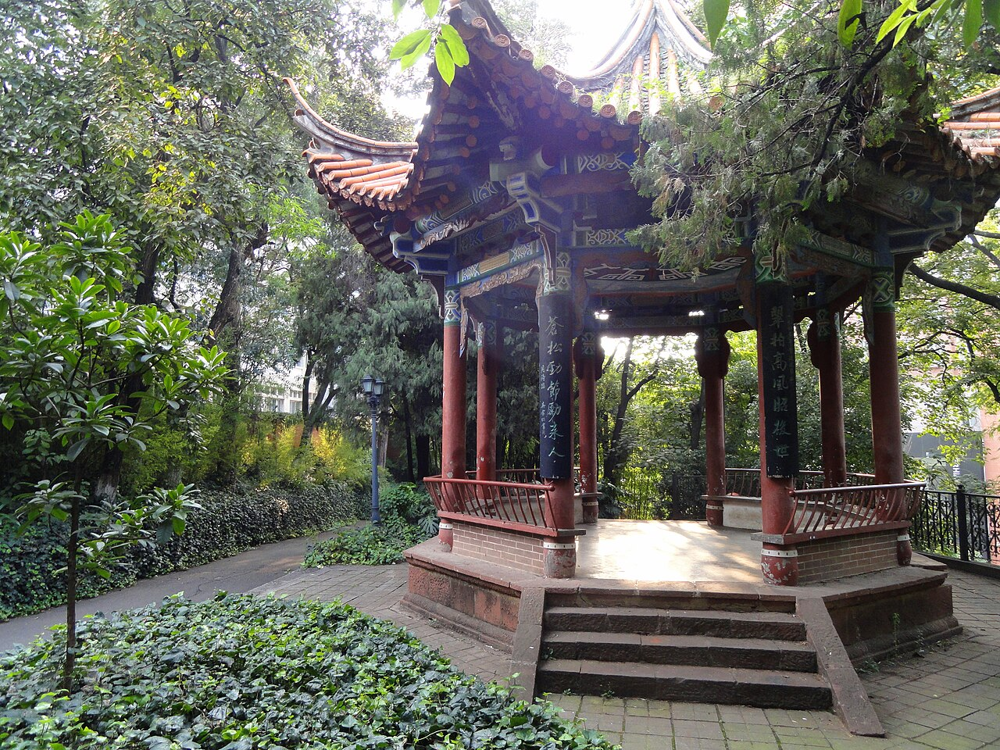
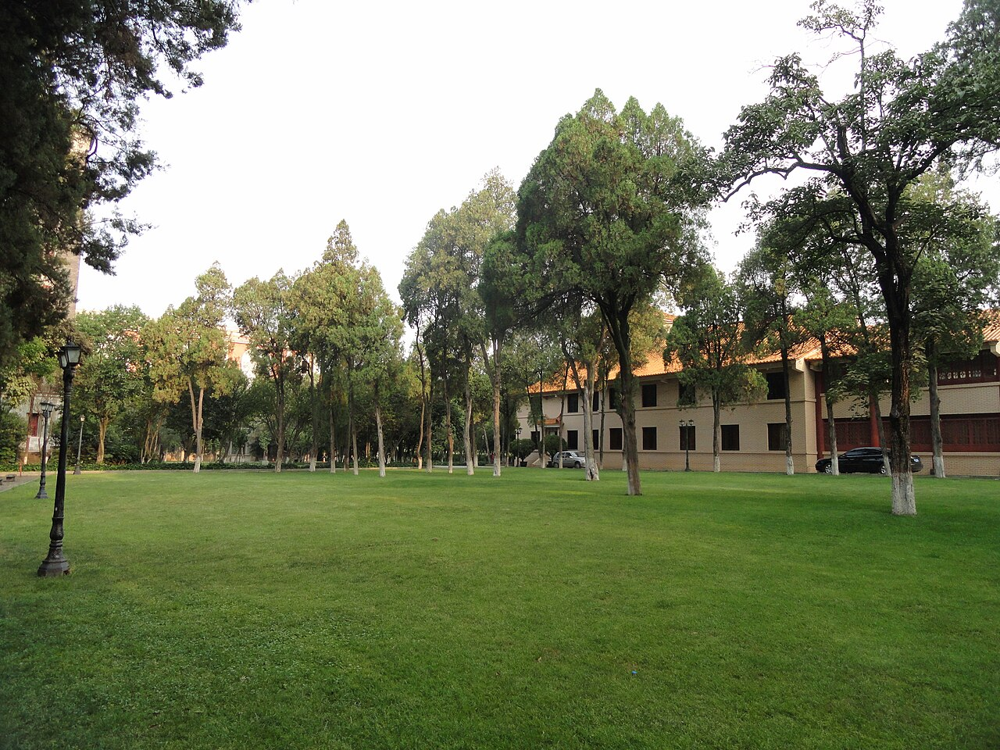
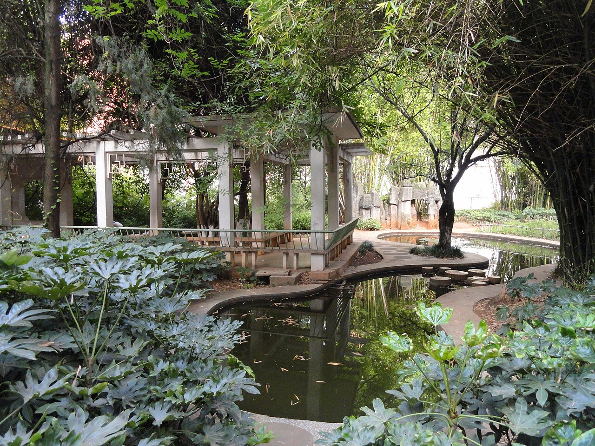
🌄 校内环境 · 呈贡校区
云大主校区，大学城东外环南路。明远楼、图书馆（仰止楼）、泽湖、云山都在这里。
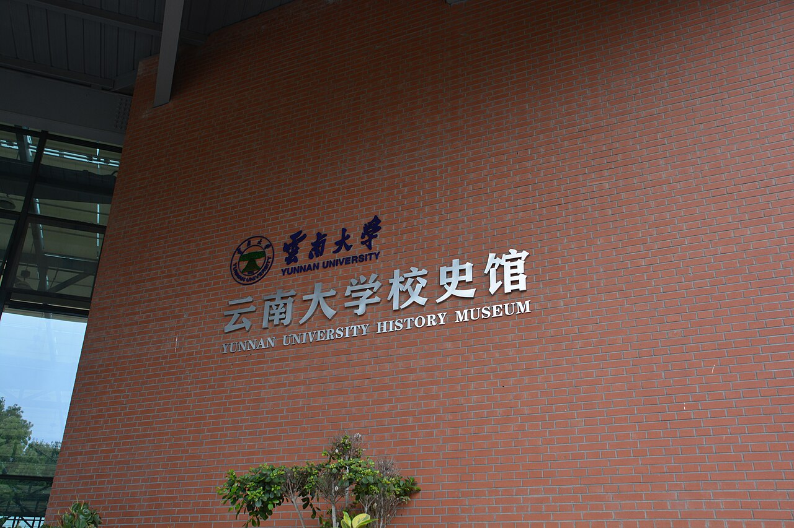
呈贡校区正门主体建筑，校训“会泽百家 至公天下”所在。自由图库暂无可使用照片，可替换为自己拍摄的实景。
呈贡校区大型图书馆。自由图库暂无可使用照片，可替换为自己拍摄的实景。
图书馆后方的校园山地与植物园，适合散步观景。自由图库暂无可使用照片，可替换为自己拍摄的实景。
呈贡校区的景观湖泊，常有天鹅出没。自由图库暂无可使用照片，可替换为自己拍摄的实景。
呈贡校区体育馆与运动场地。自由图库暂无可使用照片，可替换为自己拍摄的实景。
🛏️ 宿舍环境
说明：自由版权图库中目前缺少呈贡各苑区与现行宿舍楼的公开照片，因此这里不擅自使用版权图片。下列园区先用文字介绍，等你提供自己拍摄或已获授权的照片后，可随时替换。
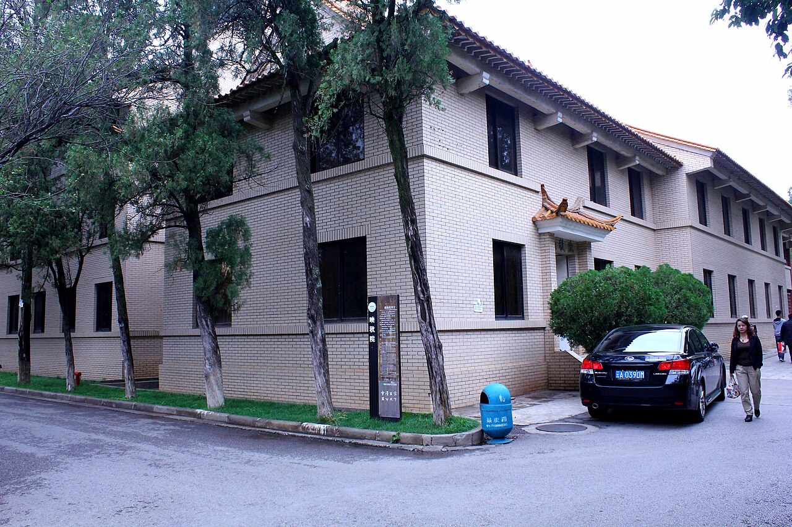
呈贡校区学生公寓园区之一，常见 4 人间、上床下桌，配置阳台与独立卫浴（具体以楼栋为准）。
暂无自由版权照片呈贡校区学生公寓园区之一，靠近食堂与运动场，通勤方便。
暂无自由版权照片呈贡校区学生公寓园区之一，多个学院的同学居住于此。
暂无自由版权照片呈贡校区学生公寓园区之一，园区生活配套较完善。
暂无自由版权照片东陆校区还有多栋宿舍与研究生公寓，楼栋条件各不相同，以学校后勤公布为准。
暂无自由版权照片